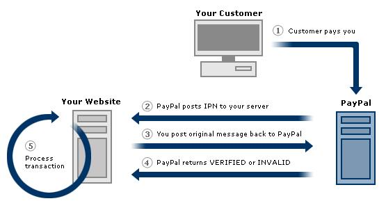
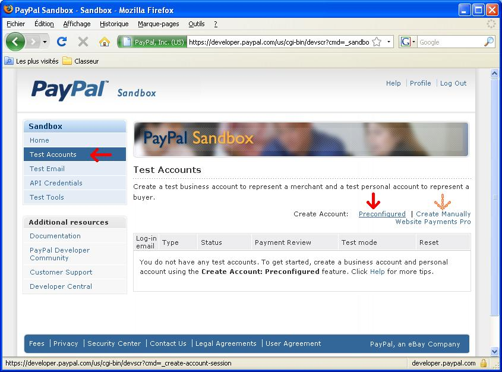
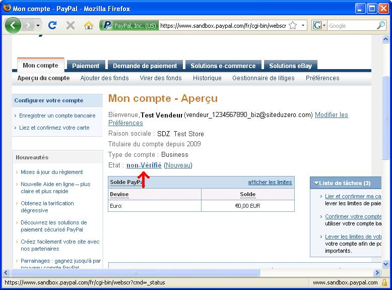
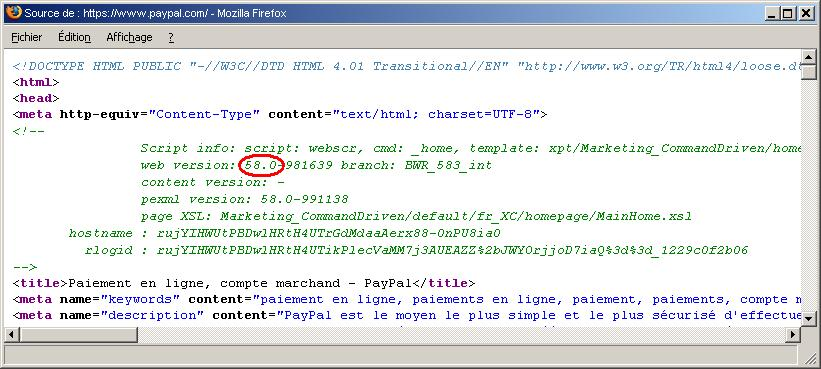
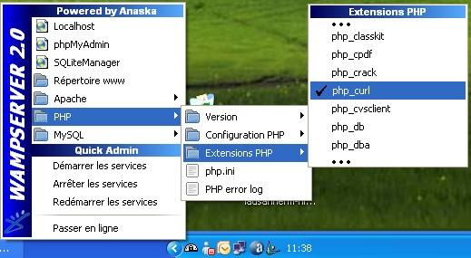
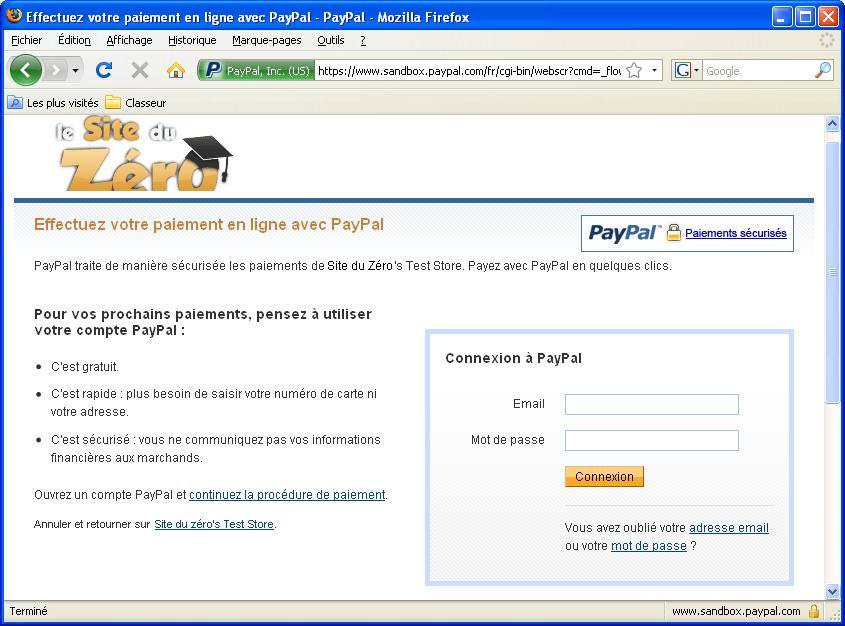

PayPal est un système de paiement en ligne permettant aux surfeurs du Web d'acheter en toute sécurité sur Internet. Le site bien connu www.ebay.fr est le principal intéressé. Il propose le paiement des articles achetés sur eBay, via PayPal. Et pour cause, il se trouve que eBay est propriétaire de PayPal depuis 2002.
Pour plus d'informations, visitez le site de PayPal : www.paypal.fr.
Comment ça marche ?
C'est un peu comme une banque virtuelle. Vous y déposez de l'argent par chèque, ou par virement bancaire par exemple. Sauf que ça ne vous rapporte aucun intérêt. Ensuite, lorsque vous souhaitez acheter quelque chose sur Internet et que le site en question vous propose de payer par PayPal, vous virez le montant de votre achat directement sur le compte du vendeur. Le vendeur n'a plus qu'à faire l'opération inverse pour récupérer l'argent de son compte PayPal. Bien entendu il peut le laisser sur son compte s'il souhaite à son tour acheter quelque chose sur Internet.
Il est également possible de payer par carte de crédit. Ainsi, lorsque vous achetez quelque chose, l'argent est débité de votre carte de crédit pour aller sur le compte PayPal du vendeur. C'est un avantage pour le vendeur, mais également pour l'acheteur. L'acheteur n'a pas besoin de confier son numéro de carte de crédit à un vendeur qu'il ne connaît pas, et le vendeur y gagne financièrement. En effet, pour permettre le paiement par carte de crédit sur un site web, il faut débourser vraiment beaucoup d'argent, et les contraintes de sécurité peuvent êtres relativement lourdes.
Beaucoup de sociétés proposent des systèmes de paiement en ligne comme par exemple Moneybookers, Clik2Pay ou encore NETELLER, et bien d'autres encore.
D'ailleurs, si ça vous intéresse, j'ai également écrit un tutoriel sur le payement via Moneybookers. Il est disponible sur le Site du Zéro, --> sur cette page <--.
Mais pour répondre à cette question, j'ai quelques arguments.
Le paiement en ligne par PayPal est probablement le plus connu des services de paiement par Internet en France et dans beaucoup d'autres pays d'Europe. Il peut donc jouer en votre avantage pour vendre un bien ou un service sur Internet. Si votre visiteur a déjà un compte sur PayPal, il sera plus disposé à vous acheter quelque chose que s'il doit encore s'inscrire sur un autre site qu'il ne connaît pas.
Il permet également le paiement direct par carte de crédit. Si le visiteur ne vous connaît pas, il n'aura pas très confiance en vous et ne souhaitera pas vous laisser son numéro de carte de crédit. Alors qu'en passant par PayPal, il a la certitude que vous ne pourrez pas faire usage de sa carte de crédit à son insu, puisque c'est PayPal qui gèrera la transaction.
PayPal est simple d'utilisation (pour le client qui achète quelque chose sur votre site).
Il est très largement répandu dans la plupart des pays du monde. Vous pouvez ainsi espérer booster vos ventes dans le monde entier.
Par contre, ce qui peut repousser certains sites à utiliser ce système de paiement, c'est qu'il demande pas mal de connaissances pour être mis en place sur votre site web. C'est d'ailleurs pour cela que j'ai écrit ce tutoriel, alors pas de panique, suivez-moi, je vous montrerai le chemin ! :ange:
Vous trouvez sur le site de PayPal des documentations techniques concernant l'intégration de ce système de paiement sur votre site web. Certaines sont en anglais et d'autres en français. Je vais donc essayer de regrouper tout ce dont vous avez besoin de savoir dans ce tutoriel et vous expliquer en détail, pas à pas, ce que vous devez faire.
Mais avant, il faut bien comprendre toutes les étapes d'un paiement.
Ce qui se passe lors d'un paiement
La transaction s'effectue en plusieurs points.
Le visiteur est sur votre site et vous achète des objets (tableaux, montres, votre grand-mère ou encore des stylos) ou un service (petites annonces, accès à des contenus payants, vidéo de cu... lture à l'ancienne des champs de maïs, etc.).
Le visiteur clique sur le bouton de payement PayPal. À ce moment-là, il va se passer plusieurs choses...
1. Le serveur de votre site web va appeler une API PayPal. C'est un programme situé sur le serveur de PayPal. Vous allez lui donner toutes les informations concernant le paiement (prix, devise, etc.).
2. Le serveur vous retourne une chaîne de caractères alphanumérique pour identifier le paiement. Cette chaîne s'appelle un jeton, ou « token » en anglais.
3. Vous redirigez votre client sur le site de PayPal, en y ajoutant en paramètre le jeton obtenu auparavant, afin qu'il puisse effectuer le paiement.
4. Le visiteur choisit le mode de paiement depuis le site de PayPal (carte de crédit ou versement direct depuis le solde de son compte).
Le visiteur est redirigé sur votre site. Là encore, il se passe beaucoup de choses...
5. Votre serveur va envoyer une seconde demande au serveur PayPal via les API (en envoyant le jeton obtenu dans la première phase), afin de connaître les détails du client (facultatif).
5b. Le serveur PayPal vous retourne les informations client (nom, prénom, etc.) (facultatif).
6. Vous envoyez une troisième et dernière demande au serveur PayPal via les API, afin de finaliser la transaction, et de connaître le résultat de la transaction finale.
6b. Le serveur PayPal vous informe si le paiement a été accepté ou non.
7. Il ne vous reste plus qu'à exécuter la suite de vos traitements et d'afficher la page adéquate à votre visiteur (« Merci » en cas de paiement, autre message en cas d'annulation du paiement :colere2: «?!# @!!?!?»).
Par quel moyen communiquer avec le site de PayPal ?
PayPal met à disposition deux techniques. Par le protocole SOAP, ou par l'API nommé NVP PayPal.
Fonctionnement du protocole SOAP
La communication s'effectue par le protocole SOAP. C'est un protocole RPC orienté objet bâti sur XML. Un protocole RPC est un protocole d'appel de procédures à distance. Le XML est un langage informatique de balisage générique.
o_O Ouah ! Ça en fait des mots barbares !!!
Pour simplifier, cela consiste à créer une feuille XML et de l'envoyer au serveur PayPal par une fonction spécifique appelée SOAP. Ou au contraire, de recevoir une feuille XML de la part de PayPal, et de la lire afin de récupérer les informations.
Le NVP PayPal est plus facile à utiliser. Il permet de faire la même chose que le protocole SOAP, sauf qu'au lieu d'envoyer et de réceptionner des données formatées en XML, on envoie et réceptionne des données par l'URL.
Les requêtes ou résultats de cette API ressembleront plutôt à cela :
Je ne vais pas vous dire d'utiliser l'un ou l'autre, vous êtes libres de choisir celui qui vous convient le mieux. Par contre, je vais vous aider à faire votre choix.
La grosse différence entre ces deux API est au niveau de l'utilisation. Le protocole SOAP s'utilise à l'aide de la POO, tandis que l'API NVP est en mode procédural (comme appris dans le cours PHP de M@teo21). Mais en dehors du mode de programmation, on peut également se pencher sur l'aspect de relecture. Il est plus facile de visionner ou de comprendre un résultat au format XML qu'au format URL.
Donc si vous êtes des programmeurs confirmés et que vous avez l'habitude de coder vos pages en Programmation Orientée Objet, je vous conseille le protocole SOAP. Si au contraire vous programmez habituellement en mode procédural, ou si vous ne vous sentez tout simplement pas à l'aise avec la POO, je vous conseille le NVP.
Mais si vous décidez plutôt de programmer grâce au protocole SOAP, vous trouverez toutes les informations nécessaires sur le site de PayPal. Peut-être que prochainement j'ajouterai un chapitre afin d'expliquer également ce deuxième mode de communication, mais je dois vous avouer que je fais partie de la deuxième catégorie de personnes (ceux qui ne maîtrisent pas super bien la POO).
Quoi qu'il en soit, dans un premier temps, les préparatifs sont identiques.
Il existe encore d'autres méthodes de communication avec le serveur de PayPal.
Paiement « statique »
Bouton Acheter maintenant
Vous pouvez par exemple simplement ajouter un bouton de paiement en y indiquant le montant, votre compte PayPal, et toutes autres informations concernant le paiement. Lorsque le client clique sur ce bouton, il sera invité à se connecter sur le site de PayPal afin d'effectuer le paiement. Cependant avec cette méthode, vous êtes obligés de consulter votre compte pour constater que le paiement a effectivement eu lieu. Vous ne pouvez donc pas automatiser de traitements sur votre site.
Dons
Vous avez également la possibilité de créer un bouton "Dons", qui permet à vos visiteurs de vous verser de l'argent sur votre compte sans contrepartie.
Paiement « dynamique »
Notification instantanée de paiement (IPN)
Afin d'automatiser les traitements sur votre site web suite à un paiement, il existe une méthode appelée Notification instantanée de paiement (IPN). Celle-ci, couplée au bouton Acheter maintenant, vous permet d'appeler des traitements sur votre site web, lorsqu'un paiement a été effectué sur votre compte.
C'est, en quelque sorte, l'opération inverse aux API PayPal. Au lieu d'appeler l'API PayPal pour effectuer le paiement, c'est PayPal qui appelle votre script lorsqu'un paiement a été effectué.
Dans cette configuration, le paiement s'effectue comme ceci :
le client clique sur le bouton Payer Maintenant ;
1. le client effectue le paiement sur le site de PayPal,
2. le serveur de PayPal appelle une page de votre site pour annoncer qu'un paiement a été effectué,
3. vous appelez une page du serveur PayPal afin de vérifier que c'est bien PayPal qui vous envoie la confirmation de paiement, et non pas un individu qui veut se faire passer pour PayPal,
4. PayPal appelle à nouveau une page de votre site web afin de vous informer si s'est bien lui qui vous envoie cette requête ou non,
vous appelez une dernière fois une page de PayPal pour l'informer que vous avez bien reçu sa réponse ;
5. vous pouvez effectuer les traitements contenus sur votre site.
Voici une petite image pour illustrer tout cela :

Image tirée de la documentation officielle PayPal
Contenu du tutoriel
Cette méthode peut paraître un peu plus simple que celles utilisant les API. Cependant mon cours ne parle malheureusement pas de cette méthode. Peut-être que, lorsque j'aurai un peu plus de temps, je rédigerai une sous-partie de ce tutoriel consacrée à cette méthode.
Mais si celle-ci vous intéresse, vous pouvez retrouver toutes les informations nécessaires sur le site officiel de PayPal. J'ai mis à disposition les liens dans la partie Annexes de ce tutoriel.
Si quelqu'un souhaite rédiger le(s) chapitre(s) concernant la méthode IPN ou SOAP, n'hésitez pas à me contacter par MP, afin de compléter ce tutoriel.
On se retrouve au chapitre suivant pour effectuer votre premier paiement virtuel de test. o_O Rassurez-vous : on va créer un compte exprès pour les tests, vous n'aurez pas besoin de dépenser un centime. :D
Dans ce chapitre vous allez voir comment utiliser l'API NVP de PayPal. Nous allons effectuer un paiement « manuellement » pour bien comprendre le fonctionnement.
Mais avant, il va falloir créer un compte sur le site consacré aux tests de PayPal.
Comme pour tout programme, avant d'avoir quelque chose qui fonctionne parfaitement, il faut faire beaucoup de tests. C'est pourquoi, pour ne pas vous ruiner inutilement dans vos tests, vous avez la possibilité de créer plusieurs comptes fictifs de test, sur un site annexe spécialement créé pour les développeurs. Ce site est une copie conforme du site PayPal, sauf que l'argent est fictif. Ainsi, vous pouvez transférer de l'argent d'un compte à l'autre sans problème.
Ce site a pour nom PayPal Sandbox. Le mot sandbox veut dire "bac à sable" en français. On utilise cette appellation pour faire référence à un environnement de test pour logiciels ou sites web.
Une fois inscrits, vous recevrez un e-mail de confirmation. Cliquez sur le lien contenu dans cet e-mail afin d'activer votre compte.
Ensuite, connectez-vous à votre Sandbox, cliquez sur le lien Test Accounts, puis sur preconfigured et créez un compte Seller. C'est ce compte qui vous servira de compte commercial pour le vendeur fictif de votre site web. Vous pouvez également utiliser l'option Create Manually, mais c'est plus long. L'option pré-configurée affecte à votre place un nom, un prénom, une adresse, etc.

Renouvelez l'expérience en créant un second compte, mais cette fois Buyer, afin de créer le compte fictif de l'acheteur. Cliquez ensuite sur Show Advanced Options, pour lui attribuer un montant disponible de départ... Profitez-en... Ce n'est pas tous les jours qu'on peut s'attribuer plusieurs milliers d'euros en un seul clic. :p
Récupérer les données API
Pour se connecter à l'API de PayPal, nous aurons besoin d'un nom d'utilisateur, d'un mot de passe ainsi que d'une signature. Pour vous procurer tout cela, il faut procéder comme suit.
Dans la gestion de vos comptes Sandbox, cliquez sur le bouton Enter Sandbox Test Site. Ce bouton vous ouvre un lien sur le site https://www.sandbox.paypal.com/. À ce moment-là, cliquez sur le bouton Connectez-vous, puis entrez le nom d'utilisateur et le mot de passe de votre compte vendeur créé précédemment.
Une fois dans la gestion du compte, commencez par vérifier celui-ci. Ceci consiste à vérifier votre compte bancaire, afin d'être sûr que celui-ci vous appartienne. Comme nous sommes sur un site de test, vous n'aurez pas à indiquer vos vraies coordonnées bancaires. Votre statut passera automatiquement au statut Vérifié après la procédure suivante :
cliquez sur le lien État : Non-vérifié ;
prenez l'une des options qui vous sont proposées ;
si vous avez choisi la vérification par compte bancaire :
remplissez tous les champs de la banque avec des valeurs bidon. Il suffit de vous affaler sur votre clavier, vous verrez, ça marche très bien. En général, ça vous donne quelque chose du genre : klsaudbyh,
lorsqu'on vous demandera d'imprimer l'autorisation de prélèvement, cliquez simplement sur le bouton Imprimer ; lorsque le panneau de sélection de votre imprimante s'affiche, cliquez sur Annuler ; ceci activera le bouton continuer,
et enfin cliquez sur le bouton Soumettre ; votre statut sera passé à l'état Vérifié ;
dans le cas d'une vérification par carte de crédit :
conservez les informations pré-remplies, puis cliquez sur le lien Continuer,
retournez sur la page d'accueil de votre compte, puis cliquez à nouveau sur le lien Non-vérifié,
la page vous demandera d'entrer 4 chiffres de vérification : entrez des chiffres au hasard, puis cliquez sur Continuer,
votre statut sera passé à l'état Vérifié.

Maintenant que votre compte est vérifié, créons les données API. Pour ce faire, cliquez sur le lien Modifier les préférences, puis cliquez sur Accès à l'API. Et enfin cliquez sur Demander des informations d'authentification API. Et pour terminer, choisissez Demandez une signature API.
Relevez l'identifiant API, le mot de passe API ainsi que la signature de l'API. Vous en aurez besoin plus tard.
C'est en fait une liste de paramètres encodée URL. C'est ce que vous ajoutez en paramètres de vos pages PHP, après le point d'interrogation. Les paramètres sont séparés par des & , et les noms des paramètres sont séparés de leurs valeurs par un =. Certains caractères (comme par exemple !*'();:@&=+$,/?%#[]) sont convertis en % suivis de leurs valeurs hexadécimales.
En PHP, vous pouvez retranscrire cette chaîne à l'aide de la fonction urldecode. Ce qui nous donne :
Citation : URL
ACK=Failure&L_ERRORCODE0=81002&L_SHORTMESSAGE0=Unspecified Method&L_LONGMESSAGE0=Method Specified is not Supported&L_SEVERITYCODE0=Error
Bon d'accord, ce n'est pas beaucoup plus clair. Mais après avoir séparé chacun des paramètres, on obtient quelque chose de plus lisible :
ACK=Failure
L_ERRORCODE0=81002
L_SHORTMESSAGE0=Unspecified Method
L_LONGMESSAGE0=Method Specified is not Supported
L_SEVERITYCODE0=Error
ACK correspond au résultat. Il peut contenir les valeurs suivantes :
Success en cas de succès ;
SuccessWithWarning en cas de succès, mais lorsqu'il s'est passé quelque chose d'anormal ;
Failure en cas d'échec ;.
FailureWithWarning en cas d'échec ;
Warning en cas d'échec ;
En cas d'erreur, elle est expliquée dans les variables suivantes. Ces noms de variables sont numérotés afin de pouvoir en définir plusieurs, si plusieurs erreurs ont été détectées.
L_ERRORCODE0 correspond au code de l'erreur. Ce numéro peut vous servir à monitorer une erreur dans votre programme. (Par exemple : si l'erreur 007 apparaît, faites appel à James Bond !)
L_SHORTMESSAGE0 vous explique brièvement le problème.
L_LONGMESSAGE0 vous explique précisément la nature de l'erreur.
L_SEVERITYCODE0 définit le niveau de gravité de l'erreur. (S'il comporte plusieurs messages mais que seul l'un d'entre eux empêche le programme de fonctionner, recherchez le niveau 'Error', afin de comprendre pourquoi ça ne fonctionne pas.)
Dans notre exemple précédent, rien n'a fonctionné, car il ne reconnaît pas le traitement que nous avons souhaiter effectuer. Normal, puisqu'on ne lui a rien demandé... :p
Création du jeton (token)
Afin d'obtenir le jeton qui nous servira plus tard pour rediriger le client sur le site de PayPal, il nous faut envoyer à PayPal les données API que vous avez prélevées précédemment.
Afin de formuler une requête sur le site de PayPal, nous devons définir un certain nombre de paramètres obligatoires. Pour toute requête à formuler, vous devez passez les paramètres suivants :
USER : correspond au nom d'utilisateur API que vous avez récupéré précédemment ;
PWD : correspond au mot de passe API que vous avez également récupéré précédemment ;
SIGNATURE : correspond à la signature de votre compte API que (attention, roulement de tambour), vous avez aussi récupéré précédemment...
VERSION : correspond à la version de l'API que vous souhaitez utiliser. Ainsi si un changement est effectué sur l'API de PayPal, votre programme reste compatible avec l'ancienne version. Jusqu'à ce que vous adaptiez votre code si besoin, et que vous définissiez la dernière version de l'API dans ce paramètre.
Version de l'API

Il ne vous reste plus qu'à essayer d'appeler la page que nous avons vue tout à l'heure en lui passant tous ces paramètres.
Hé, mais tu te fous de nous ?? J'ai exactement la même réponse qu'avant. Ça ne fonctionne pas du tout...
Bien évidemment, nous n'avons toujours pas défini quel traitement nous souhaitons effectuer. Pour ce faire, il nous suffit d'ajouter encore le paramètre METHOD. Nous verrons plus tard toutes les méthodes que nous pouvons appeler, mais pour notre premier test, appelez la méthode SetExpressCheckout. Elle permet de définir un paiement et de récupérer le jeton pour rediriger votre visiteur sur le site de PayPal. Mais cette méthode requiert encore 3 autres paramètres obligatoires. Le paramètre CANCELURL qui définit l'URL sur laquelle PayPal doit rediriger le visiteur s'il annule la transaction ; le paramètre RETURNURL qui définit l'URL en cas de traitement effectué avec succès, ainsi que le paramètre AMT qui définit le montant que le visiteur vous doit. Voici donc les paramètres à ajouter :
METHOD=SetExpressCheckout
CANCELURL=http://www.siteduzero.com/cancel.php
RETURNURL=http://www.siteduzero.com/return.php
AMT=10.0
Ce qui devrait vous donner une URL qui ressemble à ceci :
Maintenant que la requête a été acceptée par le serveur de PayPal, vous pouvez contempler votre résultat en accédant à la page suivante, et en passant en paramètre le jeton qui vous a été retourné.
Lors de la mise en place sur votre site, le but sera de rediriger le visiteur à cette adresse pour qu'il se connecte sur son compte PayPal et accepte (ou refuse) le paiement.
Je vous propose donc de vous rendre à cette adresse et d'accepter le paiement afin que nous puissions poursuivre le cours.
GetExpressCheckoutDetails
Une fois connecté, le paiement accepté, nous allons devoir rappeler l'API PayPal, mais cette fois avec la méthode GetExpressCheckoutDetails, en y passant en paramètre le jeton obtenu. Cette méthode permet de récupérer toutes les informations du paiement ainsi que les informations de l'acheteur (nom, prénom, adresse, etc.). N'oubliez pas d'y ajouter les paramètres habituels.
Vous noterez que vous pouvez récupérer vraiment beaucoup d'informations avec cette fonction.
DoExpressCheckoutPayment
Pour compléter le transfert et effectuer le virement, il faut appeler une troisième et dernière fois l'API PayPal, mais cette fois avec la fonction DoExpressCheckoutPayment.
Afin d'effectuer cette action, vous aurez besoin de lui communiquer plusieurs paramètres. Les paramètres habituels de connexion (USER, PWD, VERSION, SIGNATURE, TOKEN), ainsi que la fonction DoExpressCheckoutPayment.
Mais il faut encore indiquer les paramètres suivants.
Le paramètre PAYMENTACTION a la valeur sale pour indiquer qu'il s'agit d'une vente finale.
Le paramètre PAYERID prend l'identifiant du paiement qui a été attribué par PayPal. Cet identifiant est unique, et il nous est transmis en $_GET à la page définie dans le paramètre RETURNURL de la première action. Mais vous pouvez également récupérer ce paramètre à l'aide de l'action GetExpressCheckoutDetails que nous venons de voir à l'instant.
Le paramètre AMT, qui doit correspondre au montant que vous avez défini lors de l'appel de la méthode SetExpressCheckout.
Et pour finir le paramètre CURRENCYCODE qui détermine la devise dans laquelle le montant est défini. Naturellement, il doit également être identique à celui renseigné lors de l'appel de la méthode SetExpressCheckout.
Il existe également d'autres paramètres concernant les enchères eBay, ou pour des paiements partiels... Mais ceux-ci ne nous concernent pas pour le cas d'un achat direct.
Ce qui nous donnera, au final, quelque chose comme ça :
Non, pas de champagne cette fois-ci, sinon vous ne serez plus en état de lire la suite du tutoriel.
Si vous retournez dans la gestion de vos comptes, vous devriez voir que le compte Acheteur a été débité de 10 $, et que le compte vendeur a été crédité de ce même montant.
Si vous le souhaitez, vous pouvez exécuter toutes ces actions une seconde fois, mais en annulant le paiement lors de la connexion sur le site de PayPal. Ainsi vous devriez être redirigés à la page définie dans le paramètre CANCELURL, et le paiement ne sera pas accepté lors de votre tentative de paiement à l'aide de l'action DoExpressCheckoutPayment.
D'autres paramètres
Vous venez de voir comment communiquer avec le serveur API PayPal, avec un minimum de paramètres. Mais vous allez maintenant voir quelques paramètres optionnels que vous pouvez inclure à la fonction SetExpressCheckout, et qui peuvent peut-être vous intéresser. En particulier le paramètre CURRENCYCODE, si vous voulez définir un montant en euros.
Nom du paramètre
Description
Exemple
CURRENCYCODE
Devise du montant. Si ce paramètre n'est pas spécifié, la devise est définie en $ américains (USD)
EUR
DESC
Description de l'article mis en vente. Cette description apparaitra lors du paiement sur le site de PayPal (long. max. 127 caractères)
Magnifique oeuvre d'art (que mon fils de 3 ans a peint.)
LOCALECODE
Langue dans laquelle le site sera affiché. Par défaut c'est l'anglais (US)
FR
HDRIMG
Image qui sera affichée en haut à gauche de la page de paiement. (max. 750 x 90 px). Par défaut le nom de l'entreprise est affiché. PayPal recommande qu'elle soit stockée sur un serveur sécurisé (https). Probablement pour éviter les messages affichant qu'un contenu non sécurisé se trouve sur la page.
Celui-ci est un champ personnalisé. Il nous sera renvoyé lorsque nous ordonnerons le paiement. Vous pouvez vous en servir pour vous renvoyer l'id de votre client, ou le site web sur lequel l'achat a été effectué, si vous traitez plusieurs sites avec le même script par exemple.
id_client:12;site:www.siteduzero.com
Il existe encore beaucoup d'autres paramètres, qui par exemple, vous permettent de modifier les couleurs d'affichage lors de la connexion sur le site de PayPal, ou d'autres qui permettent d'envoyer l'adresse de livraison au service PayPal. Je ne vous les ai pas détaillés pas ici, mais si toutefois ceux-ci vous intéressent, consultez le guide PayPal, disponible dans la partie <<Annexes>> de ce tutoriel.
Maintenant que vous avez bien compris le principe, nous allons l'automatiser à l'aide de PHP.
Je cours déjà au chapitre suivant, rejoignez-moi dès que vous serez prêts. ^^
Dans ce chapitre, vous allez intégrer dans vos pages web ce que nous venons de voir dans le chapitre précédent.
Je considère que vous connaissez suffisamment PHP pour suivre ce cours. Si vous ne maîtrisez pas bien tout cela, allez d'abord lire le cours PHP de M@teo21 sur cette page.
Pour permettre à PHP de se connecter à un site web distant et à récupérer le contenu renvoyé, vous aurez besoin de l'extension php_curl.
Pour ce faire sous Windows, il vous suffit de dé-commenter la ligne : extension=php_curl.dll du fichier php.ini. Sous Linux ou Mac, je ne sais pas comment s'appelle l'extension, mais en recherchant php_curl dans le fichier de configuration de PHP, vous ne devriez pas avoir de problème pour le retrouver. Ou depuis WampServer, il vous suffit de vous rendre sur : PHP / Extensions PHP, puis d'activer l'extension php_curl.

Passons à l'action
Nous allons commencer par créer une variable contenant l'URL que notre script devra appeler.
Comme certaines données restent les mêmes pour chaque appel de l'API (user, passe, version, etc.), je vous propose de créer une fonction PHP qui va créer votre chaîne de départ. Vous n'aurez plus qu'à y ajouter les paramètres supplémentaires correspondant aux traitements que vous souhaitez effectuer. Il y a également un autre avantage à cela. Lorsque vous déciderez de mettre en production votre application, vous n'aurez qu'à modifier ce fichier pour que le serveur de production de PayPal soit utilisé, en lieu et place du serveur de la SandBox.
Voici donc un exemple simple de cette fonction
<?php
function construit_url_paypal()
{
$api_paypal = 'https://api-3t.sandbox.paypal.com/nvp?'; // Site de l'API PayPal. On ajoute déjà le ? afin de concaténer directement les paramètres.
$version = 56.0; // Version de l'API
$user = 'vendeur_1236594550_biz_api1.siteduzero.com'; // Utilisateur API
$pass = 'SEFYITJFG8QRHN1S'; // Mot de passe API
$signature = 'ZWg4tSHZZ0GQIK8U6VKGWO1mxrtOAJzAGFNRnFpDWRKX-fv8q5Tuj64n'; // Signature de l'API
$api_paypal = $api_paypal.'VERSION='.$version.'&USER='.$user.'&PWD='.$pass.'&SIGNATURE='.$signature; // Ajoute tous les paramètres
return $api_paypal; // Renvoie la chaîne contenant tous nos paramètres.
}
?>
Maintenant enregistrez cette fonction dans un fichier. Nommez-le par exemple fonction_api.php.
Ensuite créez un second fichier qui contiendra votre script principal. À l'intérieur nous allons appeler notre fonction et récupérer le résultat dans une variable. Et pour finir, vous n'avez plus qu'à y ajouter tous les paramètres permettant de créer le paiement sur le serveur PayPal.
Pour contrôler que votre variable retourne une chaîne correcte, affichez-là à l'écran à l'aide de la fonction echo.
Voici ce que ça nous donne :
<?php
include("fonction_api.php"); // On importe la page créée précédemment
$requete = construit_url_paypal(); // Construit les options de base
// La fonction urlencode permet d'encoder au format URL les espaces, slash, deux points, etc.)
$requete = $requete."&METHOD=SetExpressCheckout".
"&CANCELURL=".urlencode("http://127.0.0.1/cancel.php").
"&RETURNURL=".urlencode("http://127.0.0.1/return.php").
"&AMT=10.0".
"&CURRENCYCODE=EUR".
"&DESC=".urlencode("Magnifique oeuvre d'art (que mon fils de 3 ans a peint.)").
"&LOCALECODE=FR".
"&HDRIMG=".urlencode("http://www.siteduzero.com/Templates/images/designs/2/logo_sdz_fr.png");
// Affiche la chaîne pour vérifier que la chaîne est bien formatée :
echo $requete;
?>
Afin de vérifier que ça fonctionne, recopiez l'URL qui s'affiche lors de l'exécution de ce script dans la barre d'adresse de votre navigateur pour accéder à cette page. Vous devriez voir le paramètre : ACK=Success. Si ce n'est pas le cas, c'est que les paramètres de connexion sont faux, ou qu'il y a un paramètre qui n'est pas correct. Consultez les messages d'erreur affichés pour comprendre ce qui n'a pas fonctionné.
Maintenant demandons à PHP d'exécuter cette requête à notre place. Pour ce faire, il faut utiliser les fonctions curl.
Tout d'abord il faut déclarer une session cURL. Pour faire cela, il vous suffit d'exécuter la commande curl_init, suivi de l'URL à exécuter. Cette fonction retourne une variable de type Session cURL. Il faut donc la récupérer dans une variable que nous appellerons par exemple : $ch. Dans notre cas l'URL à exécuter est contenue dans la variable $requete. Il faut donc écrire dans notre fichier : $ch = curl_init($requete);
Ensuite nous allons devoir ajouter une option à notre objet cURL afin qu'il ignore le certificat SSL, car la page que nous allons consulter est sécurisée (page https). Sans cela, le script ne fonctionnera pas, et nous retournera une erreur expliquant que le certificat n'a pas pu être vérifié. Ceci se fait grâce à la fonction curl_setopt. Elle prend 3 paramètres. Notre instance cURL ($ch dans notre cas), l'option à modifier, et la valeur de l'option. Pour ignorer le certificat SSL, il faudra mettre l'option CURLOPT_SSL_VERIFYPEER à 0.
Ce qui nous donne la fonction suivante : curl_setopt($ch, CURLOPT_SSL_VERIFYPEER, 0);
Et enfin, on envoie la requête à l'aide de la fonction curl_exec. Celle-ci retourne true si elle s'est exécutée, et false en cas d'échec. S'il y a eu un problème, vous pouvez consulter le détail de l'erreur grâce à la fonction curl_error.
Maintenant, remplaçons le echo $resultat par les instructions permettant d'exécuter cette requête.
Ce que cela nous donne
<?php
include("fonction_api.php");
$requete = construit_url_paypal();
$requete = $requete."&METHOD=SetExpressCheckout".
"&CANCELURL=".urlencode("http://127.0.0.1/cancel.php").
"&RETURNURL=".urlencode("http://127.0.0.1/return.php").
"&AMT=10.0".
"&CURRENCYCODE=EUR".
"&DESC=".urlencode("Magnifique oeuvre d'art (que mon fils de 3 ans a peint.)").
"&LOCALECODE=FR".
"&HDRIMG=".urlencode("http://www.siteduzero.com/Templates/images/designs/2/logo_sdz_fr.png");
// Initialise notre session cURL. On lui donne la requête à exécuter
$ch = curl_init($requete);
// Modifie l'option CURLOPT_SSL_VERIFYPEER afin d'ignorer la vérification du certificat SSL. Si cette option est à 1, une erreur affichera que la vérification du certificat SSL a échoué, et rien ne sera retourné.
curl_setopt($ch, CURLOPT_SSL_VERIFYPEER, 0);
// On lance l'exécution de la requête URL.
if (curl_exec($ch)) // Si elle s'est exécutée correctement, on affiche "OK"
{echo "<p>OK !</p>";}
else // S'il y a une erreur, on affiche "Erreur", suivi du détail de l'erreur.
{echo "<p>Erreur</p><p>".curl_error($ch)."</p>";}
// On ferme notre session cURL.
curl_close($ch);
?>
Quand vous exécutez ce script, vous devriez retrouver la chaîne qui est retournée par PayPal (avec à nouveau le paramètre ACK=Success), suivi du paragraphe OK. Cependant, nous ne souhaitons pas que le résultat de la requête soit retourné à l'écran, mais qu'il soit contenu dans une variable afin de pouvoir le traiter par la suite.
Pour faire cela, il faut mettre l'option CURLOPT_RETURNTRANSFER à 1, de la même manière que nous avons fait précédemment concernant le certificat SSL. En procédant ainsi, la valeur retournée par curl_exec ne sera plus à true (1) si l'exécution est effectuée, mais retournera une chaîne contenant la valeur retournée par la page.
Je vous propose ensuite de créer un tableau (array) contenant tous les paramètres que nous renvoie PayPal, accompagnés de leurs valeurs (comme l'array $_GET ou $_POST.). C'est plus facile à traiter par la suite. Pour réussir cela, il nous faudra séparer chaque paramètre (facilement départagé par le signe &). Pour chacun des paramètres, on construira notre array en affectant le nom comme identifiant, et la valeur... bah comme valeur :-P. Pour reconnaître la valeur du nom, on se servira du mot-clé =. Tout ceci grâce à la fonction explode, qui permet de récupérer une liste de sous-chaîne à partir d'un séparateur. Notez que certains caractères contenus dans ces sous-chaînes sont encodés en URL (%##). Afin de convertir ces signes par leurs caractères (: & / = etc.), il faudra utiliser la fonction urldecode.
Pour vérifier que tout a bien été séparé comme il faut, on peut afficher notre array grâce à la fonction print_r
Le code ci-dessous est un peu compliqué, c'est pourquoi j'ai mis un maximum de commentaires afin que vous compreniez bien toutes les étapes.
Une fois codé en PHP, voilà ce que tout ça nous donne
<?php
include("fonction_api.php");
$requete = construit_url_paypal();
$requete = $requete."&METHOD=SetExpressCheckout".
"&CANCELURL=".urlencode("http://127.0.0.1/cancel.php").
"&RETURNURL=".urlencode("http://127.0.0.1/return.php").
"&AMT=10.0".
"&CURRENCYCODE=EUR".
"&DESC=".urlencode("Magnifique Oeuvre d'art (que mon fils de 3 ans a peint.)").
"&LOCALECODE=FR".
"&HDRIMG=".urlencode("http://www.siteduzero.com/Templates/images/designs/2/logo_sdz_fr.png");
$ch = curl_init($requete);
curl_setopt($ch, CURLOPT_SSL_VERIFYPEER, 0);
// Retourne directement le transfert sous forme de chaîne de la valeur retournée par curl_exec() au lieu de l'afficher directement.
curl_setopt($ch, CURLOPT_RETURNTRANSFER, 1);
// On lance l'exécution de la requête URL et on récupère le résultat dans une variable
$resultat_paypal = curl_exec($ch);
// S'il y a une erreur, on affiche "Erreur", suivi du détail de l'erreur.
if (!$resultat_paypal)
{echo "<p>Erreur</p><p>".curl_error($ch)."</p>";}
else // S'il s'est exécuté correctement, on effectue les traitements...
{
// On récupère la liste de paramètres, séparés par un 'et' commercial (&)
$liste_parametres = explode("&",$resultat_paypal);
// Pour chacun de ces paramètres, on exécute le bloc suivant, en intégrant le paramètre dans la variable $param_paypal
foreach($liste_parametres as $param_paypal)
{
// On récupère le nom du paramètre et sa valeur dans 2 variables différentes. Elles sont séparées par le signe égal (=)
list($nom, $valeur) = explode("=", $param_paypal);
// On crée un tableau contenant le nom du paramètre comme identifiant et la valeur comme valeur.
$liste_param_paypal[$nom]=urldecode($valeur); // Décode toutes les séquences %## et les remplace par leur valeur.
}
// On affiche le tout pour voir que tout est OK.
echo "<pre>";
print_r($liste_param_paypal);
echo "</pre>";
}
// On ferme notre session cURL.
curl_close($ch);
?>
Prenez votre temps sur le code affiché ci-dessus. Il n'est pas facile, mais super utile pour traiter vos données en toute simplicité par la suite.
Maintenant on arrive à y voir beaucoup plus clair sur les valeurs retournées. Elles sont nettement plus lisibles comme ça, n'est-ce pas ?
À présent, si on veut vérifier que l'exécution n'a généré aucune erreur sur le serveur PayPal, il nous suffit de vérifier que la variable $liste_param_paypal['ACK'] soit bien égale à Success.
Avant de continuer, je vous propose de déplacer le petit bout de code, qui crée la variable $liste_param_paypal, dans notre page fonction_api.php. Car on aura besoin de ce même code pour chaque donnée récupérée par l'API PayPal. Cette fonction prendra comme paramètre d'entrée, la chaîne complète contenant le résultat obtenu par la fonction cURL, et nous retournera un array contenant tous les paramètres récupérés.
Maintenant voilà à quoi notre fichier fonction_api.php ressemble
<?php
function construit_url_paypal()
{
$api_paypal = 'https://api-3t.sandbox.paypal.com/nvp?'; // Site de l'API PayPal. On ajoute déjà le ? afin de concaténer directement les paramètres.
$version = 57.0; // Version de l'API
$user = 'vendeur_1236594550_biz_api1.siteduzero.com'; // Utilisateur API
$pass = 'SEFYITJFG8QRHN1S'; // Mot de passe API
$signature = 'ZWg4tSHZZ0GQIK8U6VKGWO1mxrtOAJzAGFNRnFpDWRKX-fv8q5Tuj64n'; // Signature de l'API
$api_paypal = $api_paypal.'VERSION='.$version.'&USER='.$user.'&PWD='.$pass.'&SIGNATURE='.$signature; // Ajoute tous les paramètres
return $api_paypal; // Renvoie la chaîne contenant tous nos paramètres.
}
function recup_param_paypal($resultat_paypal)
{
$liste_parametres = explode("&",$resultat_paypal); // Crée un tableau de paramètres
foreach($liste_parametres as $param_paypal) // Pour chaque paramètre
{
list($nom, $valeur) = explode("=", $param_paypal); // Sépare le nom et la valeur
$liste_param_paypal[$nom]=urldecode($valeur); // Crée l'array final
}
return $liste_param_paypal; // Retourne l'array
}
?>
Pour que le visiteur puisse régler son dû, et si la demande de paiement a été correctement transmise, il faut rediriger le client sur le site de PayPal afin qu'il s'identifie.
Pour ce faire, il existe une fonction PHP permettant de rediriger le visiteur sur un autre site. Il s'agit de la fonction header. En fait cette fonction permet d'envoyer des entêtes HTTP au navigateur du client, et en lui passant l'entête "Location:" le visiteur est redirigé sur le site en question.
On va donc utiliser cette fonction pour le diriger sur le site de PayPal en y ajoutant le jeton.
Au final
<?php
include("fonction_api.php");
$requete = construit_url_paypal();
$requete = $requete."&METHOD=SetExpressCheckout".
"&CANCELURL=".urlencode("http://127.0.0.1/cancel.php").
"&RETURNURL=".urlencode("http://127.0.0.1/return.php").
"&AMT=10.0".
"&CURRENCYCODE=EUR".
"&DESC=".urlencode("Magnifique oeuvre d'art (que mon fils de 3 ans a peint.)").
"&LOCALECODE=FR".
"&HDRIMG=".urlencode("http://www.siteduzero.com/Templates/images/designs/2/logo_sdz_fr.png");
$ch = curl_init($requete);
curl_setopt($ch, CURLOPT_SSL_VERIFYPEER, 0);
curl_setopt($ch, CURLOPT_RETURNTRANSFER, 1);
$resultat_paypal = curl_exec($ch);
if (!$resultat_paypal)
{echo "<p>Erreur</p><p>".curl_error($ch)."</p>";}
else
{
$liste_param_paypal = recup_param_paypal($resultat_paypal); // Lance notre fonction qui dispatche le résultat obtenu en un array
// Si la requête a été traitée avec succès
if ($liste_param_paypal['ACK'] == 'Success')
{
// Redirige le visiteur sur le site de PayPal
header("Location: https://www.sandbox.paypal.com/webscr&cmd=_express-checkout&token=".$liste_param_paypal['TOKEN']);
exit();
}
else // En cas d'échec, affiche la première erreur trouvée.
{echo "<p>Erreur de communication avec le serveur PayPal.<br />".$liste_param_paypal['L_SHORTMESSAGE0']."<br />".$liste_param_paypal['L_LONGMESSAGE0']."</p>";}
}
curl_close($ch);
?>
C'est-y pas beau ?

Maintenant, il va falloir créer les deux autres pages. cancel.php et return.php. Ce sont les deux pages que vous avez définies dans les paramètres CANCELURL et RETURNURL.
Pour la page cancel.php, rien de bien compliqué.. Vous affichez un message de profond désarroi du style :
Citation : Message de profond désarroi
Snif, il ne me reste plus qu'à aller chercher la corde pour me pendre, avant que j'annonce à ma femme et mes 5 enfants qu'ils ne pourront pas manger ce soir, une fois de plus....
Bon c'est peut-être un peu exagéré, optez plutôt pour un message plus convivial, comme ceci :
Citation : Message convivial
Le paiement a été annulé. En espérant que vous changerez rapidement d'avis, nous vous adressons nos salutations les plus sincères, Pov' type va !.
Bien entendu, vous y ajouterez tous les traitements internes à votre programme (mise à jour de la base de données, etc.).
cancel.php
<h1>Paiement annulé</h1>
<p>
Le paiement a été annulé. En espérant que vous changerez d'avis, nous vous adressons nos salutations les plus sincères.
</p>
<?php
// mysql_query("UPDATE commandes SET etat='annulé' WHERE id_commande='1234'");
?>
Pour la page return.php, c'est un peu différent. Il va falloir réaliser la transaction à l'aide de la fonction DoExpressCheckoutPayment de l'API PayPal. Ensuite vous pouvez exécuter vos traitements internes (mise à jour de la base de données, etc.).
L'utilisation de la méthode DoExpressCheckoutPayment a été vue dans le sous-chapitre « Communication avec l'API NVP » et le reste du code ressemble, comme deux gouttes d'eau, au premier. Je ne vais donc pas tout réexpliquer. Alors trêve de bavardage et passons à la pratique.
return.php
<?php
session_start();
include("fonction_api.php"); // On importe la page créée précédemment
$requete = construit_url_paypal(); // Construit les options de base
// On ajoute le reste des options
// La fonction urlencode permet d'encoder au format URL les espaces, slash, deux points, etc.)
$requete = $requete."&METHOD=DoExpressCheckoutPayment".
"&TOKEN=".htmlentities($_GET['token'], ENT_QUOTES). // Ajoute le jeton qui nous a été renvoyé
"&AMT=10.0".
"&CURRENCYCODE=EUR".
"&PayerID=".htmlentities($_GET['PayerID'], ENT_QUOTES). // Ajoute l'identifiant du paiement qui nous a également été renvoyé
"&PAYMENTACTION=sale";
// Initialise notre session cURL. On lui donne la requête à exécuter.
$ch = curl_init($requete);
// Modifie l'option CURLOPT_SSL_VERIFYPEER afin d'ignorer la vérification du certificat SSL. Si cette option est à 1, une erreur affichera que la vérification du certificat SSL a échoué, et rien ne sera retourné.
curl_setopt($ch, CURLOPT_SSL_VERIFYPEER, 0);
// Retourne directement le transfert sous forme de chaîne de la valeur retournée par curl_exec() au lieu de l'afficher directement.
curl_setopt($ch, CURLOPT_RETURNTRANSFER, 1);
// On lance l'exécution de la requête URL et on récupère le résultat dans une variable
$resultat_paypal = curl_exec($ch);
if (!$resultat_paypal) // S'il y a une erreur, on affiche "Erreur", suivi du détail de l'erreur.
{echo "<p>Erreur</p><p>".curl_error($ch)."</p>";}
// S'il s'est exécuté correctement, on effectue les traitements...
else
{
$liste_param_paypal = recup_param_paypal($resultat_paypal); // Lance notre fonction qui dispatche le résultat obtenu en un array
// On affiche tous les paramètres afin d'avoir un aperçu global des valeurs exploitables (pour vos traitements). Une fois que votre page sera comme vous le voulez, supprimez ces 3 lignes. Les visiteurs n'auront aucune raison de voir ces valeurs s'afficher.
echo "<pre>";
print_r($liste_param_paypal);
echo "</pre>";
// Si la requête a été traitée avec succès
if ($liste_param_paypal['ACK'] == 'Success')
{
echo "<h1>Youpii, le paiement a été effectué</h1>"; // On affiche la page avec les remerciements, et tout le tralala...
// Mise à jour de la base de données & traitements divers...
mysql_query("UPDATE commandes SET etat='OK' WHERE id_commande='".$liste_param_paypal['TRANSACTIONID']."'");
}
else // En cas d'échec, affiche la première erreur trouvée.
{echo "<p>Erreur de communication avec le serveur PayPal.<br />".$liste_param_paypal['L_SHORTMESSAGE0']."<br />".$liste_param_paypal['L_LONGMESSAGE0']."</p>";}
}
// On ferme notre session cURL.
curl_close($ch);
?>
Nous venons de voir comment créer nos pages afin d'effectuer un paiement, mais il nous manque quand même pas mal d'informations pour compléter notre base de données. Pour récupérer toutes ces informations, il nous faut appeler l'API PayPal avec la fonction GetExpressCheckoutDetails. Ainsi vous récupérerez toutes les informations qu'il est possible d'avoir sur le paiement ainsi que sur l'acheteur.
Cette fonction peut être utile autant dans votre page d'annulation de paiement que dans celle de validation.
Vous pouvez donc créer une page de traitement afin de mettre à jour les informations client, par exemple.
Voici donc ce que ça donne en images. ;)
traitements.php
<?php
include("fonction_api.php");
$requete = construit_url_paypal();
$requete = $requete."&METHOD=GetExpressCheckoutDetails".
"&TOKEN=".htmlentities($_GET['token'], ENT_QUOTES); // Ajoute le jeton
$ch = curl_init($requete);
curl_setopt($ch, CURLOPT_SSL_VERIFYPEER, 0);
curl_setopt($ch, CURLOPT_RETURNTRANSFER, 1);
$resultat_paypal = curl_exec($ch);
if (!$resultat_paypal) // S'il y a une erreur
{echo "<p>Erreur</p><p>".curl_error($ch)."</p>";}
// S'il s'est exécuté correctement
else
{
$liste_param_paypal = recup_param_paypal($resultat_paypal);
// On affiche tous les paramètres afin d'avoir un aperçu global des valeurs exploitables (pour vos traitements). Une fois que votre page sera comme vous le voulez, supprimez ces 3 lignes. Les visiteurs n'auront aucune raison de voir ces valeurs s'afficher.
echo "<pre>";
print_r($liste_param_paypal);
echo "</pre>";
// Si la requête a été traitée avec succès
// Mise à jour de la base de données & traitements divers... Exemple :
mysql_query("INSERT INTO client(nom, prenom) VALUE('".$liste_param_paypal['FIRSTNAME']."', '".$liste_param_paypal['LASTNAME']."')");
}
curl_close($ch);
?>
Vous n'avez plus qu'à appeler cette page après que le visiteur se soit connecté au site de PayPal.
Une fois que vous avez bien testé votre programme (paiement complété / paiement annulé), et que tout va comme sur des roulettes, il vous reste à mettre votre site en production pour que tous vos visiteurs puissent en profiter !
Pour accomplir cela, voici ce qu'il faut faire.
Rendez-vous sur le site de Paypal : www.paypal.fr, puis cliquez sur le lien Ouvrez un compte. Ensuite choisissez un compte de type Business, afin d'avoir toutes les options concernant les sites web. Une fois que votre compte est créé, procédez à la création d'une signature API, comme pour le compte de test.
Cliquez sur Préférences / Plus?, puis Accès à l'API, et enfin Demander des informations d'authentification API. Choisissez ensuite Demandez une signature API et valider votre demande. Vous aurez ainsi le nom d'utilisateur, le mot de passe et la signature de l'API. Remplacez les données de tests, contenues dans votre fichier de configuration, par les données que vous venez d'obtenir. Pensez à conserver les données de tests quelque part afin que vous puissiez effectuer de nouveaux tests lors de mises à jour de votre programme.
Modifiez également le serveur de l'API par celui de production :
Enregistrez le site de redirection du visiteur dans une variable, et placez celle-ci dans votre fichier de configuration. Ainsi toutes les données à modifier sont au même endroit. Et c'est plus facile pour switcher entre l'environnement de test et celui de production.
Configuration et fonctions API
<?php
/****** SERVEUR DE TESTS ******/
// $serveur_paypal = "https://www.sandbox.paypal.com/webscr&cmd=_express-checkout&token=";
/****** SERVEUR DE PRODUCTION ******/
$serveur_paypal = "https://www.paypal.com/webscr&cmd=_express-checkout&token=";
function construit_url_paypal()
{
/****** DONNEES DE TESTS ******/
/*
$api_paypal = 'https://api-3t.sandbox.paypal.com/nvp?';
$user = 'vendeur_1236594550_biz_api1.siteduzero.com';
$pass = 'SEFYITJFG8QRHN1S';
$signature = 'ZWg4tSHZZ0GQIK8U6VKGWO1mxrtOAJzAGFNRnFpDWRKX-fv8q5Tuj64n';
*/
/****** DONNEES DE PRODUCTION ******/
$api_paypal = 'https://api-3t.paypal.com/nvp?';
$user = 'user_api1.siteduzero.com';
$pass = 'KIRWQBHAQTUZO4ST';
$signature = 'IUk3eOIUFAXKTUAPSITZHQOpoytQPYhQYOZNMkDlYPTYL-og6x7HnW98x';
$version = 56.0; // Version de l'API
$api_paypal = $api_paypal.'VERSION='.$version.'&USER='.$user.'&PWD='.$pass.'&SIGNATURE='.$signature; // Ajoute tous les paramètres
return $api_paypal; // Renvoie la chaîne contenant tous nos paramètres.
}
?>
Et lorsque vous devez rediriger le visiteur sur le site de PayPal, vous n'avez qu'à écrire :
Attendez : avant de partir, j'ai encore une petite chose à vous dire. PayPal a défini pour son logo des règles à suivre lorsque vous proposez l'option PayPal à vos clients.
Vous pouvez également consulter le guide d'intégration visuelle à cette adresse, afin de savoir où et comment mettre en place ces logos.
Voilà : maintenant, vous êtes capables de bien comprendre comment fonctionne tout cela, et vous n'aurez aucune difficulté à le mettre en place sur votre site web.
Visitez encore la page Annexes pour accéder aux liens de la documentation officielle de PayPal, ainsi qu'un résumé des fonctions et serveurs à utiliser.
Dans ce dernier chapitre, vous trouverez les liens du site officiel de PayPal contenant la documentation nécessaire à la mise en place de ce système de paiement, ainsi que les serveurs de connexion PayPal. Vous trouverez également d'autres liens comme la documentation PHP de la fonction cURL, ainsi qu'un SDK utilisant les fonctions de l'API PayPal. Et pour finir, en fin de chapitre, j'ai regroupé les principales fonctions d'appel de l'API, leurs paramètres ainsi que les paramètres retournés par ces fonctions.
La version en cours de l'API se trouve en commentaire dans le code source de la page du site de PayPal. Cependant, il existe un topic sur le forum du site de PayPal, où l'un des modérateurs met à jour cette information après chaque changement de version. Voici cette adresse :
Il existe des exemples complets de l'intégration de PayPal sur un site web. Il y a des exemples en PHP, mais aussi en ASP, en Java, en Ruby et encore dans bien d'autres langages... Des exemples de l'utilisation de l'API NVP, mais également des exemples de la communication avec le protocole SOAP.
Pour cela, il n'y a qu'une seule chose à faire, vous rendre à cette adresse :
Dans cette partie, j'ai dressé des tableaux répertoriant toutes les informations qui peuvent vous être utiles concernant les appels de l'API, ainsi que les valeurs qui vous sont retournées.
Contenu des appels de l'API PayPal
Vous trouverez ci-dessous les paramètres qui doivent figurer dans chaque appel de l'API PayPal.
Ci-dessous les paramètres qui sont retournés après chaque appel de l'API PayPal.
Nom du paramètre
Description
Exemple
TOKEN
Jeton attribué par le serveur de PayPal
EC-28P55904SP346364Y
TIMESTAMP
Date et heure du traitement
2009-03-10T11:43:51Z
CORRELATIONID
Jeton de débogage
62da379c625d6
ACK
Statut de la requête
Success
VERSION
Version de l'API qui a été utilisée
56.0
BUILD
Version de la compilation de l'API. C'est en quelque sorte un complément du numéro de version.
854529
En cas d'erreur lors de l'exécution (paramètre ACK n'est pas égal à Success), l'API retourne également des paramètres correspondant à (aux) erreur(s) en question. Les erreurs sont numérotées et commencent par 0. Exemple : L_ERRORCODE0, L_ERRORCODE1, L_ERRORCODE2, ... Voici donc ci-dessous les paramètres que vous recevrez en cas d'erreur.
Nom du paramètre
Description
Exemple
L_ERRORCODE0
Correspond au code de l'erreur
81002
L_SHORTMESSAGE0
Message court de l'erreur. Il vous explique brièvement le problème.
Unspecified Method
L_LONGMESSAGE0
Message long de l'erreur. Il vous explique plus en détail le problème.
Method Specified is not Supported
L_SEVERITYCODE0
Définit le niveau de gravité de l'erreur
Error
SetExpressCheckout
Cette fonction sert à initialiser un paiement sur le site de PayPal. Voici les principaux paramètres que vous pouvez lui transmettre.
Nom du paramètre
Description
Exemple
METHOD
Traitement à effectuer sur le serveur PayPal. Dans notre cas un paiement direct.
SetExpressCheckout
CANCELURL
URL vers laquelle le visiteur sera redirigé en cas d'annulation du paiement.
Valeur que le visiteur doit vous verser. N'oubliez pas le point, même si le prix est un chiffre rond (qu'il ne contient aucun centime).
10.0
CURRENCYCODE
Devise du montant. Si ce paramètre n'est pas spécifié, la devise est définie en $ américains (USD)
EUR
DESC
Description de l'article mis en vente. Cette description apparaitra lors du paiement sur le site de PayPal (long. max 127 caractères).
Magnifique oeuvre d'art (que mon fils de 3 ans a peinte)
LOCALECODE
Langue dans laquelle le site sera affiché. Par défaut c'est l'anglais (US.)
FR
HDRIMG
Image qui sera affichée en haut à gauche de la page de paiement. (max. 750 x 90 px). Par défaut le nom de l'entreprise est affiché. PayPal recommande qu'elle soit stockée sur un serveur sécurisé (https). Probablement pour éviter les messages affichant qu'un contenu non sécurisé se trouve sur la page.
Celui-ci est un champ personnalisé. Il nous sera renvoyé lorsque nous ordonnerons le paiement. Vous pouvez vous en servir pour vous renvoyer l'id de votre client, ou le site web sur lequel l'achat a été effectué, si vous traitez plusieurs sites avec le même script par exemple.
id_client:12;site:www.siteduzero.com
GetExpressCheckoutDetails
Cette fonction sert à récupérer toutes les informations du paiement ainsi que les informations de l'acheteur. Voici les paramètres que vous devez lui transmettre.
Nom du paramètre
Description
Exemple
METHOD
Traitement à effectuer sur le serveur PayPal. Dans notre cas la récupération des informations.
GetExpressCheckoutDetails
TOKEN
Jeton obtenu lors de l'appel de la méthode SetExpressCheckout. Ce jeton sert à identifier le paiement.
EC-28P55904SP346364Y
Après exécution de cet API, voici la liste des paramètres qu'il nous retourne. En plus des paramètres standards (token, timestamp, etc.).
Numéro de compte unique du client PayPal. Vous en avez besoin lors de l'appel de la méthode DoExpressCheckoutPayment.
942987
PAYERSTATUS
État du payeur. Vous informe si l'identité de l'acheteur a été vérifiée.
verified / unverified
FIRSTNAME
Prénom du payeur.
Gérard
LASTNAME
Nom de famille du payeur.
Menvuça
COUNTRYCODE
Pays de résidence du payeur.
FR
SHIPTONAME
Nom de la personne associée à cette adresse.
Gérard Menvuça
SHIPTOSTREET
Adresse postale.
Av. de la Pelouse, 1 Mayet
SHIPTOCITY
Nom de la ville.
Paris
SHIPTOSTATE
État ou province.
Alsace
SHIPTOZIP
Code postal.
75002
SHIPTOCOUNTRYCODE
Code pays.
FR
ADDRESSSTATUS
État de l'adresse postale enregistrée chez PayPal. Vous informe si l'adresse a été vérifiée ou non.
Unconfirmed
CURRENCYCODE
Code de devise.
EUR
AMT
Coût total de la transaction. C'est le montant que vous avez défini lors de l'appel de la méthode SetExpressCheckout.
10.0
DoExpressCheckoutPayment
Cette méthode permet d'effectuer le virement, du compte de l'acheteur sur votre compte. L'acheteur doit au préalable s'être connecté sur le site de PayPal, et avoir accepté le paiement.
Voici les paramètres qui doivent figurer dans l'appel de cette méthode :
Nom du paramètre
Description
Exemple
METHOD
Traitement à effectuer sur le serveur PayPal. Dans notre cas la récupération des informations.
DoExpressCheckoutPayment
TOKEN
Jeton obtenu lors de l'appel de la méthode SetExpressCheckout. Ce jeton sert à identifier le paiement.
EC-28P55904SP346364Y
PAYMENTACTION
Mode d'obtention du paiement. Il peut être une autorisation de paiement (pour un paiement ponctuel), mais dans le cas d'un achat direct, ce paramètre doit être défini à sale.
sale
PAYERID
Numéro d'identification unique du compte client PayPal. Ce numéro vous est renvoyé en $_GET lors du retour du client sur notre site (après s'être connecté sur le site de PayPal), ou grâce à la méthode GetExpressCheckoutDetails.
G5ZMU94EQSKJS
AMT
Total de la commande.
10.0
CURRENCYCODE
Code de la devise.
EUR
Une fois le paiement effectué, voici ce qui nous est retourné.
Nom du paramètre
Description
Exemple
TRANSACTIONID
Numéro de transaction unique du paiement.
4SP9331895269605D
TRANSACTIONTYPE
Type de transaction.
expresscheckout
PAYMENTTYPE
Indique si le paiement est immédiat ou différé.
instant
ORDERTIME
Date et heure de l'exécution du paiement.
2009-06-11T08:50:06Z
AMT
Montant final facturé.
15.00
FEEAMT
Montant de la commission de PayPal facturée pour la transaction. :-(
0.76
TAXAMT
TVA facturée pour la transaction.
0.00
CURRENCYCODE
Code de la devise.
EUR
PAYMENTSTATUS
État du paiement. Terminé ou en attente.
Completed
PENDINGREASON
Motif pour lequel le paiement est en attente. (Plus de détail dans le guide PayPal.)
None
REASONCODE
Motif d'une annulation si TransactionType a la valeur reversal. Cette valeur ne nous concerne donc pas.
None
Et voilà... Vous êtes arrivés à la fin de mon tutoriel. J'espère qu'il vous aura beaucoup appris.
Je vous conseille tout de même de bien lire les documentations officielles, elles sont bien plus détaillées que ce tuto.
Voilà...
Et si grâce à mon tutoriel, vous devenez riche, pensez à moi. ;)


 Guide d'intégration :
Guide d'intégration :